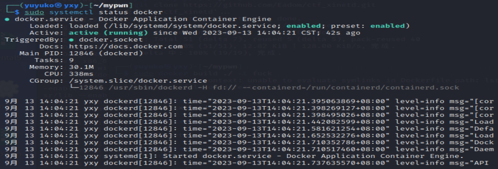
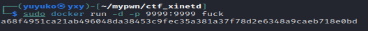
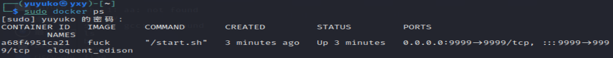
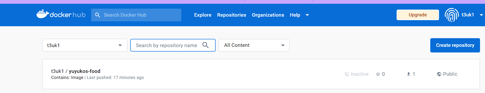
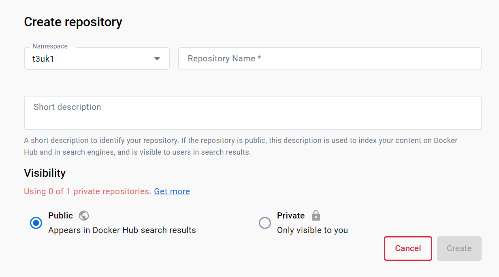
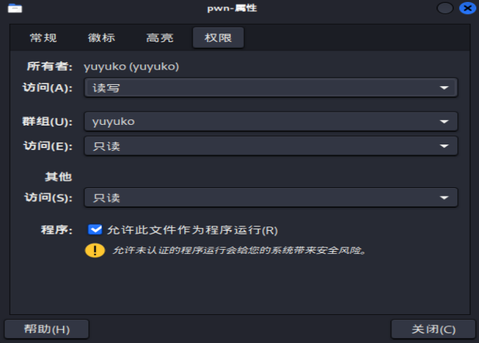

本文的配置过程不一定是规范的，不过至少我按照下面的流程做是能够正常部署的。如有缺漏或错误请见谅。
示例代码pwn.c
1 2 3 4 5 6 7 8 9 10 11 12 13 14 15 16 17 18 19 20 21 22 23 24 25 26 27 28 29 30 #include <stdio.h> #include <stdlib.h> #include <unistd.h> void initialize () { setbuf(stdin , NULL ); setbuf(stdout , NULL ); setbuf(stderr , NULL ); } void g1ft () { puts ("W0w, you have found Yuyuko's food!" ); system("/bin/sh" ); } int main () { char s[40 ]; initialize(); puts ("Yuyuko sama lose her food." ); puts ("Can you find it?" ); read(0 , s, 0x100 ); puts ("Zannen desu ne." ); puts ("Wish you can find it next time." ); return 0 ; }
编译：
1 2 3 gcc -o ./pwn -g -fno-stack-protector -no-pie ./pwn.c # -fno-stack-protector 关闭canary # -no-pie 关闭PIE保护
首先sudo apt update 一下
安装docker：
1 sudo apt install docker.io
检查安装情况：
1 sudo systemctl status docker
出现如下图所示的状态说明成功安装

1 git clone https://github.com/Eadom/ctf_xinetd.git
将代码克隆下来后，可能需要修改一下Dockerfile。
具体来说，包含换源、在运行路径末尾添加斜杠等操作以防止某些错误的发生
下面提供一个本次使用的Dockerfile：
1 2 3 4 5 6 7 8 9 10 11 12 13 14 15 16 17 18 19 20 21 22 23 24 25 26 27 28 29 30 31 32 33 34 35 36 37 38 FROM ubuntu:jammyRUN sed -i 's@//.*archive.ubuntu.com@//mirrors.ustc.edu.cn@g' /etc/apt/sources.list && \ apt-get update && apt-get -y dist-upgrade && \ apt-get install -y lib32z1 xinetd RUN useradd -m ctf WORKDIR /home/ctf/ RUN cp -R /lib*/ /home/ctf/ && \ cp -R /usr/lib*/ /home/ctf/ RUN mkdir /home/ctf/dev/ && \ mknod /home/ctf/dev/null c 1 3 && \ mknod /home/ctf/dev/zero c 1 5 && \ mknod /home/ctf/dev/random c 1 8 && \ mknod /home/ctf/dev/urandom c 1 9 && \ chmod 666 /home/ctf/dev/* RUN mkdir /home/ctf/bin/ && \ cp /bin/sh /home/ctf/bin/ && \ cp /bin/ls /home/ctf/bin/ && \ cp /bin/cat /home/ctf/bin/ COPY ./ctf.xinetd /etc/xinetd.d/ctf COPY ./start.sh /start.sh RUN echo "Blocked by ctf_xinetd" > /etc/banner_fail RUN chmod +x /start.sh COPY ./bin/ /home/ctf/ RUN chown -R root:ctf /home/ctf && \ chmod -R 755 /home/ctf CMD ["/start.sh" ] EXPOSE 9999
导入ubuntu
1 sudo docker pull ubuntu:jammy
构建Docker镜像：
1 2 cd ./ctf_xinetd #进入ctf_xinted目录下才能执行下面的指令 sudo docker build ./ -t $name
创建容器：
1 sudo docker run -d -p 9999:9999 $name
出现如下就应该成功了：

连接到靶机：
将外部文件导入到Docker中：
1 sudo docker pull $filename
将外部文件复制到Docker容器中：
1 sudo docker cp ctf_xinetd/Dockerfile a68f4951ca21:/
查看镜像中的容器：

操作容器：
1 sudo docker exec -it a68f4951ca21 bash
将题目部署到远程
注册dockerhub账号，其中username作为将要使用的镜像源的名字
创建存储库：Repositories->Create repository


镜像源名称格式（推荐）：小写英文，中间用-分割
创建完成后，在虚拟机操作
首先要登录到dockerhub：
输入对应已经注册的dockerhub账号的用户名和密码
build
1 2 sudo docker build ./ -t $username/所用镜像名 # sudo docker build ./ -t t3uk1/yuyukos-food
将本地内容传到docker
1 sudo docker push t3uk1/yuyukos-food
运行容器
1 2 3 sudo docker run -d -p 9999:9999 t3uk1/yuyukos-food # 参数解析： # 将容器的9999端口绑定到主机9999端口，前面的是主机端口，后面的是容器对应端口
ctf_xinted/bin中的两个文件分别是题目对应可执行文件和flag.txt
在ctf_xinted文档中对应设置如下：
1 2 3 4 5 6 7 8 9 10 11 12 13 14 15 16 17 18 19 20 service ctf { disable = no socket_type = stream protocol = tcp wait = no user = root type = UNLISTED port = 9999 bind = 0.0.0.0 server = /usr/sbin/chroot # replace helloworld to your program server_args = --userspec=1000:1000 /home/ctf ./pwn banner_fail = /etc/banner_fail # safety options per_source = 10 # the maximum instances of this service per source IP address rlimit_cpu = 20 # the maximum number of CPU seconds that the service may use #rlimit_as = 1024M # the Address Space resource limit for the service #access_times = 2:00-9:00 12:00-24:00 }
push成功之后应该就能远程访问了
测试:
1 nc localhost 9999 #前面设置的端口是9999
docker查看标签：
1 2 sudo docker image ls # sudo docker image rm xxx
docker查看容器情况：
1 2 sudo docker container ls # sudo docker container rm xxx
对于每一个创建的动态实例，每次创建的环境变量$FLAG是不同的，因此我们可以将这个环境变量作为题目flag的内容。
一种实现方式是更改**start.sh **文件，在执行start命令前将$FLAG写入flag文件然后将 $ FLAG取消环境变量。
1 2 3 4 5 6 7 8 9 # !/bin/sh # Add your startup script echo $FLAG > /home/ctf/flag chmod 644 /home/ctf/flag unset FLAG # DO NOT DELETE /etc/init.d/xinetd start sleep infinity
在Aurora靶场格式化设置动态flag
Whale->设置flag格式：
1 {{ "Aurora{"+uuid.uuid4()|string+"}" }}
以ubuntu18为例
运行docker容器：
1 2 sudo docker run -it -v <本地绝对路径>:/mnt/ ubuntu:bionic sudo docker run -it -v /home/yuyuko/mypwn/challenges/ret2libc/:/mnt/ ubuntu:bionic
安装gcc：
1 2 3 apt update apt-get install gcc # gcc编译
本机传输到docker容器：
1 2 sudo docker cp <本地文件绝对路径> <容器名称/容器id>:/ sudo docker cp /home/yuyuko/mypwn/challenges/ret2libc/pwn.c 1e239edbeed0:/
docker容器传输到本机：
1 2 sudo docker cp <容器名称/容器id>:/ <本地文件绝对路径> sudo docker cp 1e239edbeed0:/pwn /home/yuyuko/mypwn/challenges/ret2libc/
原因：编译的时候权限是在docker中的root
首先更改群组：

在当前群组(yuyuko)权限下chmod